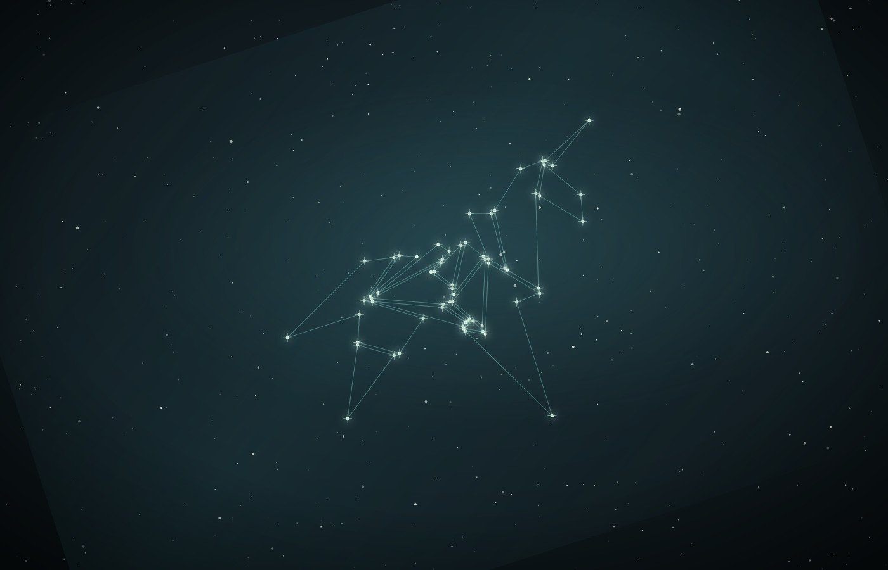
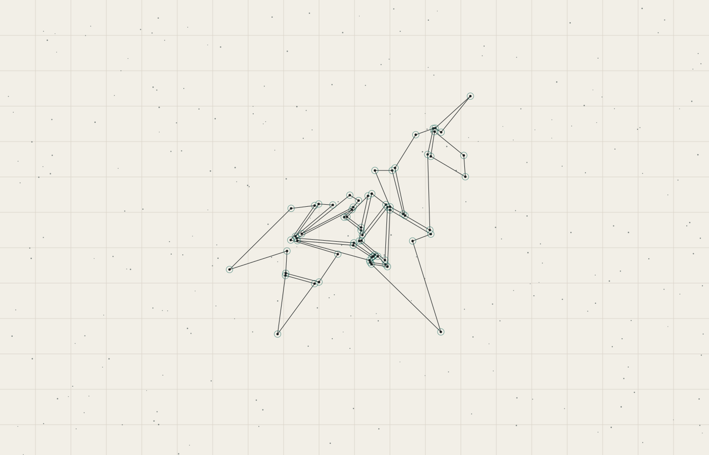

ESTUDIO 12 · EL DIBUJO COMO CIELO
El dibujo no es una imagen decorativa: es una lista de polígonos. Tomé sus vértices —no inventé ninguno— y los usé como estrellas. Las líneas siguen las aristas originales.
Oscuro: campo profundo, banda de polvo, nebulosa, estrellas medias, nodos con destello, líneas y viñeta. Papel: carta estelar con retícula fina y nodos anillados.

